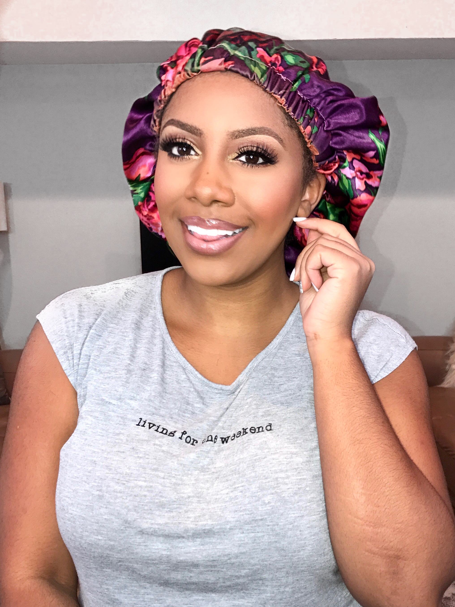

Maya Stroud
YouTube beauty guru on the rise
"I'm a wild sleeper and my bonnet stays put every night. It's even cute enough for selfies!"
"The Bon Don is a passion project for us, by us. It's about creating the change you want to see, even if that change is simply your bonnet options."
Your edges are in good hands, sis.
The Bon Don was founded after many failed attempts to find a bonnet that was large enough to contain my hair, sturdy enough to weather the storm of a good night's sleep, made of quality material, and aesthetically pleasing! After sewing myself a custom satin bonnet, I found that many of my closest friends were having the same troubles, so I began making them custom bonnets as well. As the requests for bonnets began to grow, I realized something: bonnets are a major staple in our daily routines, and it is important to us that they meet our needs. We value our hair, and thus value what we put on it. From here, came the idea for The Bon Don. It is my goal to create high quality, affordable hair maintenance products that are just as strong and beautiful as the people who use them.

The Original.
The Original is a satin-satin, reversible bonnet characterized by its bold purple design on one side, and its vibrant pink fabric on the other.

The Flower Child.
The Flower Child is a satin-silk, reversible bonnet characterized by its black-based, satin, floral design on one side, and its sleek, black, silk fabric on the other.
The Basquait.
The Basquiat is a satin-satin, reversible bonnet characterized by the colorful, satin, abstract design on one side, and its bold, orange, satin fabric on the other.

The Fineapple.
The Fineapple is a satin-lined, vinyl shower cap, characterized by the pale pink cotton fabric showing on the outside, and it's gold, satin interior. Why line your shower cap with satin? Because you deserve it!
YouTube beauty guru on the rise
"I'm a wild sleeper and my bonnet stays put every night. It's even cute enough for selfies!"

cyber security sales specialist, and magical
"I absolutely love my bonnet! Big enough to fit all of my big curls, silky enough to keep my hair soft and moist, and cute enough for me to feel beautiful in! Getting my beauty sleep never felt better. Love the unique style of the bonnet -- I have had people see my bonnet and order one immediately themselves. A cute silk bonnet is every girls' best friend. Who doesn't like to keep their hair happy and look good while doing it?! I don't know one who wouldn't."
Teacher, role model, magical.
"I was so tired of my hair looking dry in the morning and I knew it was because I didn't have a quality bonnet. My Bon Don bonnet keeps my hair fresh and looking moisturized. I teach in a low income community in the west end of Atlanta, so one of my goals is to always be a role model to my girls from head to toe. Part of that for me is keeping my hair healthy, shiny, and well maintained. My Bon Don bonnet helped me do that."